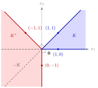

For a=0,a∈K∘ means that K lies in the closed halfspace{x∈Rn:a⊤x≤0}, whose boundary hyperplane passes through the origin. So K∘ consists of the normal vectors of all such halfspaces that contain K, together with 0.
The polar cone collects the directions that make an angle of at least 90∘ with every vector of K. For nonzero a and x,a⊤x≤0 says exactly that the angle between the vectors is not acute, so K∘ points away from K.

The figure shows Example 2 below. Each edge of K∘ is perpendicular to an edge of K:(0,−1) is orthogonal to (1,0) and (−1,1) to (1,1), and every vector in the red region makes an angle of at least 90∘ with every vector of K. The dashed mirror image −K=Cone({(−1,0),(−1,−1)}) lies strictly inside K∘, so the polar is not −K; for instance (0,−1)∈K∘ but (0,−1)∈/−K.
Written as K∘=⋂x∈K{a:a⊤x≤0}, the polar is an intersection of closed halfspaces through the origin (and of Rn, for x=0). Each of these halfspaces is a closed convex cone, and an intersection of closed convex cones is again one, so K∘ is a closed convex cone, even when K itself is neither convex nor closed. A larger cone has to satisfy more conditions, so it has a smaller polar: K1⊆K2 implies K2∘⊆K1∘. At the extremes, {0}∘=Rn and (Rn)∘={0}.
For a finitely generated convex cone only the generators need to be tested: if a⊤vk≤0 for every k, then a⊤k∑λkvk=k∑λka⊤vk≤0 for all λk≥0. The polar of a subspace from Math II is the set of vectors orthogonal to it, because a⊤x≤0 and a⊤(−x)≤0 force a⊤x=0 (Example 3 below).
A common slip is to think that the polar is the mirror image −K. That happens for the nonnegative orthant (Example 1 below) but not in general (Example 2 below). Taking the polar twice also need not give K back when K is not convex (Example 4 below). The polar cone is also what defines the normal cone of a convex set at a point.
1. The nonnegative orthant. For K={x∈Rn:x≥0},K∘={a:a≤0}. If a≤0 and x≥0, then a⊤x=i∑aixi≤0. Conversely, testing x=ei∈K (the i-th unit vector) gives ai≤0 for every i.
2. A sector. Let K=Cone({(1,0),(1,1)})={0≤x2≤x1}. Testing the generators, K∘={a:a1≤0,a1+a2≤0}. As a finitely generated cone, K∘=Cone({(0,−1),(−1,1)}): every such a equals (−a1−a2)(0,−1)+(−a1)(−1,1) with nonnegative coefficients. The polar of K∘ is {x:−x2≤0,−x1+x2≤0}=K again. Note that K∘=−K=Cone({(−1,0),(−1,−1)}); for instance (0,−1)∈K∘ but (0,−1)∈/−K.
3. A line. For the subspace K={λ(1,2):λ∈R}, both (1,2) and (−1,−2) lie in K, so a∈K∘ requires a1+2a2≤0 and −(a1+2a2)≤0. Hence K∘={a:a1+2a2=0}={μ(2,−1):μ∈R}, the orthogonal line.
4. A cone that is not convex. Let K be the union of the half-lines through (1,0) and (0,1). Then a∈K∘ if and only if a1≤0 and a2≤0, so K∘ is the nonpositive quadrant, the same as the polar of the whole nonnegative quadrant. Its polar is the nonnegative quadrant, which is strictly larger than K: it contains (1,1)∈/K. The polar cannot see the difference between K and the convex cone generated by (1,0) and (0,1).
Aliases: polar of a cone, K polar
Keywords: K^{\circ}={\boldsymbol{a}\in\mathbb{R}^n\colon\boldsymbol{a}^{\top}\boldsymbol{x}\leq0\ \forall\boldsymbol{x}\in K}, \operatorname{Cone}({\boldsymbol{v}_1,\dots,\boldsymbol{v}_m})^{\circ}, normal vectors of halfspaces through the origin, obtuse angle with every vector of K, polar of the nonnegative orthant
Symbols: element of, lambda, mu, real numbers, subset, sum
Last updated: 5 November 2026 12:47
Polar ConeNormal ConeConeConvex ConeFinitely Generated Convex ConeHalfspaceAngle Between VectorsPolyhedral Convex ConeNormal Cone of a Polyhedral SetFarkas' LemmaOrthogonal Vectors